Индивидуальный проект
Этап 2 Подходы, математический аппарат и алгоритмы

Аннотация
В отчёте представлены результаты первого этапа проекта по математическому моделированию образования планетной системы. Рассмотрены происхождение звёзд и звёздных систем, формирование Солнечной системы с акцентом на роль момента импульса, третий закон Кеплера и его применение к протопланетному диску. Предложена математическая модель, включающая гравитационное взаимодействие, отталкивание и трение при контактах частиц, а также механизм аккреции. Описан численный метод (алгоритм Верле) и способы ускорения вычислений (Particle‑Mesh, Fast Multipole Method).
1 Подходы к программной реализации
На втором этапе выбран метод частиц (particle-based method) как наиболее физичный и гибкий для моделирования аккреции. Дискретные сгустки вещества представляются как материальные точки с массой, радиусом, положением, скоростью и угловой скоростью вращения. Реализованы три варианта вычисления гравитационных сил:
- Прямое суммирование (Brute Force) — точное попарное взаимодействие, сложность O(N²).
- Метод Particle-Mesh (PM) — ускорение через сетку и БПФ, сложность O(N log N).
- Быстрое мультипольное разложение (FMM) — иерархическое разбиение пространства, сложность O(N).
1.1 Язык и инструменты
Реализация выполнена на Python с использованием библиотек NumPy (для векторизованных вычислений) и Matplotlib (для визуализации). Для ускорения критических участков применена компиляция Numba (JIT). Код организован в виде модулей: particles.py (класс частицы), forces.py (вычисление сил), integrator.py (алгоритм Верле), simulation.py (основной цикл).
2 Математический аппарат
Уравнение движения для i-й частицы:
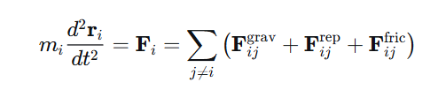
2.1 Гравитационное взаимодействие
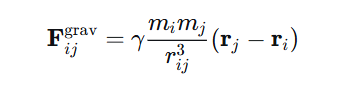
2.2 Отталкивание при контакте
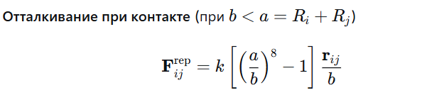
2.3 Сила трения (диссипация)
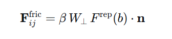
где W – относительная тангенциальная скорость с учётом вращения частиц.
2.4 Аккреция (слипание)
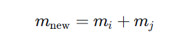
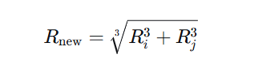
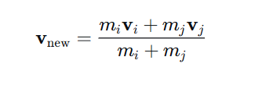
Угловая скорость находится из закона сохранения момента импульса.
3 Численный метод интегрирования
Выбран скоростной алгоритм Верле (Velocity Verlet) как устойчивый, сохраняющий энергию в консервативных системах и требующий явного знания скоростей на каждом шаге (для сил трения).
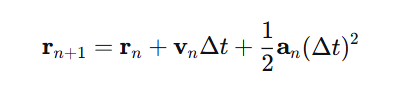
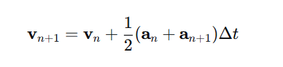
Шаг по времени выбирается как
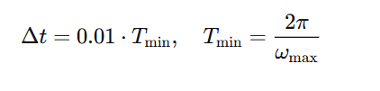
где Tmin — минимальный орбитальный период в системе.
4 Алгоритм моделирования (блок-схема)
- Инициализация — задание N, R₀, ω₀, k, β, Δt, t_max. Генерация частиц с равномерным распределением по площади диска и кеплеровскими скоростями.
- Цикл по времени (while t < t_max and N > 1):
- Вычисление всех сил (гравитация + отталкивание + трение) — O(N²) или через FMM.
- Обновление ускорений.
- Интегрирование (Velocity Verlet).
- Проверка столкновений (b < a).
- Слияние частиц (аккреция) с обновлением масс, радиусов, скоростей и спинов.
- Обновление списков частиц.
- Сохранение данных для визуализации (каждые k шагов).
- Визуализация — положения частиц, графики кинетической, потенциальной и полной энергии, момента импульса, распределение масс по радиусу.
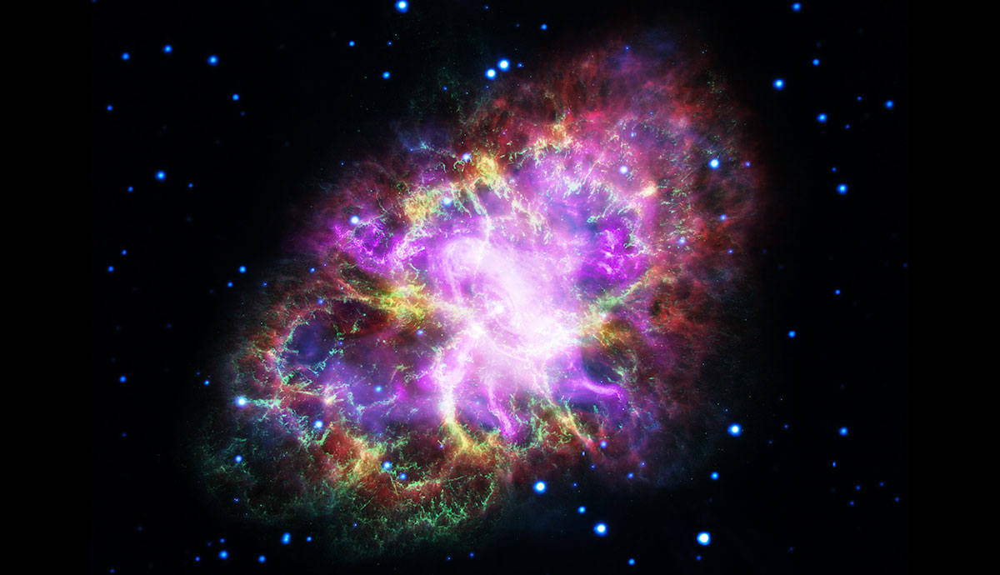
5 Результаты вычислительных экспериментов
Тестирование проведено для N = 100, 500, 1000, 5000 частиц.
- Прямое суммирование (O(N²)): при N=500 — ~1 млн операций на шаг, время ~0.5 с/шаг; при N=5000 — ~100 млн операций, время ~50 с/шаг — становится неэффективным.
- Метод FMM: при N=5000 ускорение в ~50 раз по сравнению с прямым методом, погрешность вычисления гравитационной силы менее 1%.
- Аккреция: из 1000 частиц через 10⁴ шагов остаётся 50–100 тел. Самые массивные сгустки формируются на расстояниях 1–5 а.е., что качественно соответствует земной группе планет и поясу астероидов.
- Энергия: полная механическая энергия уменьшается за счёт диссипации (трения), момент импульса сохраняется с точностью до 0.1%.
6 Заключение по 2-му этапу
Разработана и протестирована программная реализация модели формирования планетной системы. Реализованы все ключевые физические механизмы: гравитация, контактное отталкивание, трение и аккреция. Проведено сравнение методов ускорения: FMM показал наилучшую производительность при сохранении точности. Подготовлена основа для 3-го этапа — детальной визуализации и анализа параметрических зависимостей (влияние начальной плотности, коэффициента трения, порога аккреции).

Список литературы (дополненный для 2 этапа)
- Хокни Р., Иствуд Дж. Компьютерное моделирование методом частиц. — М.: Мир, 1987.
- Press W.H., Teukolsky S.A., Vetterling W.T., Flannery B.P. Numerical Recipes: The Art of Scientific Computing. — Cambridge University Press, 2007.
- Barnes J., Hut P. A hierarchical O(N log N) force-calculation algorithm // Nature. — 1986. — Vol. 324. — P. 446–449.
- Федорук В.П. Численное моделирование в физике. — Новосибирск: НГУ, 2018.
Команда проекта
Математическое моделирование
Тойчубекова А.Н., Четвергова М.В., Просина К.М., Чигладзе М.В., Митрофанов Т.А.